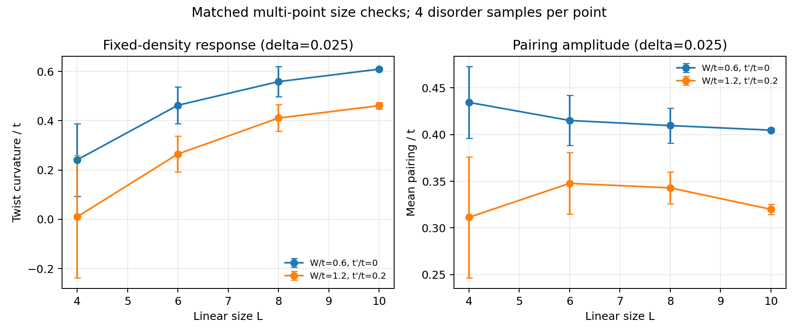
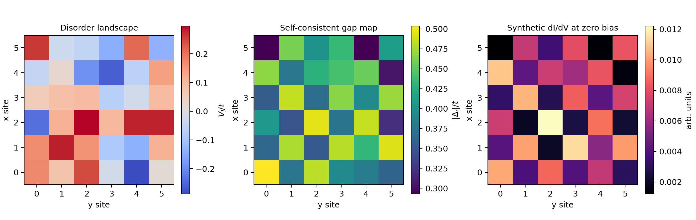
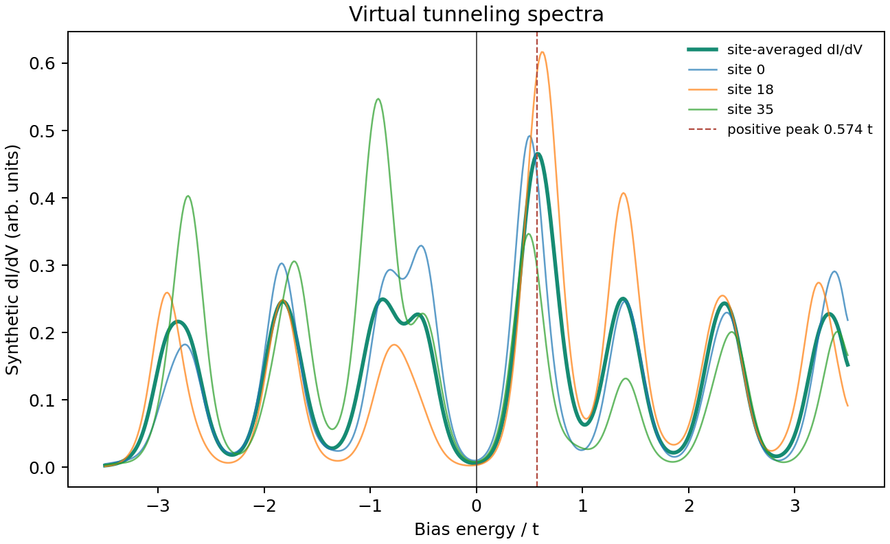

ATTRACTIVE HUBBARD MODEL · FIXED DENSITY
Pairing and phase response
under disorder
Hartree and pairing fields are solved self-consistently while the chemical potential is adjusted to hold the mean density fixed. The twist response comes from finite differences of the relaxed mean-field free energy.
ORDER PARAMETER
mean ± SEM across disorder samplesMean local pairing
PHASE RESPONSE
finite-difference d²F/dθ²Twist curvature
DATA TABLE
W/t scanValues behind the curves
| W/t | Mean pairing | Pairing SEM | Twist curvature | Curvature SEM | Density | Samples |
|---|
NUMERICAL ROBUSTNESS
Convergence checks
Fixed representative point: W/t = 1.2, t'/t = 0. Compare four lattice sizes through L=10, cumulative disorder samples, and the finite-difference twist step.
SIZE SCALING
Pairing vs lattice size
smallest tested twist step; same sample countSIZE SCALING
Twist curvature vs lattice size
finite-size response; error bars are SEMSAMPLE COUNT
Cumulative mean curvature
ordered seeded prefixes; estimates are correlatedTWIST STEP
Finite-difference sensitivity
same disorder realizations at every step| L | Twist step | Samples | Mean pairing | Pairing SEM | Mean curvature | Curvature SEM | Max density error |
|---|
Convergence here means sensitivity over the tested sizes, sample prefixes, and twist steps. It is not a thermodynamic extrapolation; the phase-field search remains limited to the configured initial states.
INITIAL-STATE ROBUSTNESS
Phase-start and larger-size check
Same seeded disorder samples are solved with one versus four phase starts at L=4,6,8. A four-sample one-start extension adds L=10.
SIZE EXTENSION
Twist curvature vs lattice size
four realizations per point; one and four starts where availablePHASE-START SENSITIVITY
Curvature change with four starts
paired difference: four-start result minus one-start result| L | Phase starts | Samples | Mean pairing | Pairing SEM | Mean curvature | Curvature SEM | Max density error |
|---|
The phase-start comparison and its separate L=10 point use four samples; the main size scan now uses twenty samples through L=10. Neither check establishes a thermodynamic limit or a global free-energy minimum.
ADDITIONAL PARAMETER POINTS
Matched size checks
Two further disorder and hopping settings, using the same four seeded samples across L=4,6,8,10. Error bars are SEM; the lowest tested twist step is shown.

VIRTUAL EXPERIMENT / STM–STS
From simulated sample to tunneling signal
One seeded disordered sample is prepared self-consistently at fixed density. The site-resolved electron LDOS is thermally broadened and passed through a simple Gaussian lock-in model to create synthetic dI/dV maps and spectra.


This is an instrument-inspired simulation of a generic lattice model. Synthetic dI/dV follows the local tunneling approximation and should not be read as a material-specific experimental prediction.